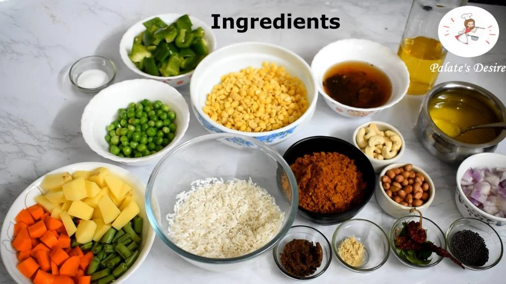
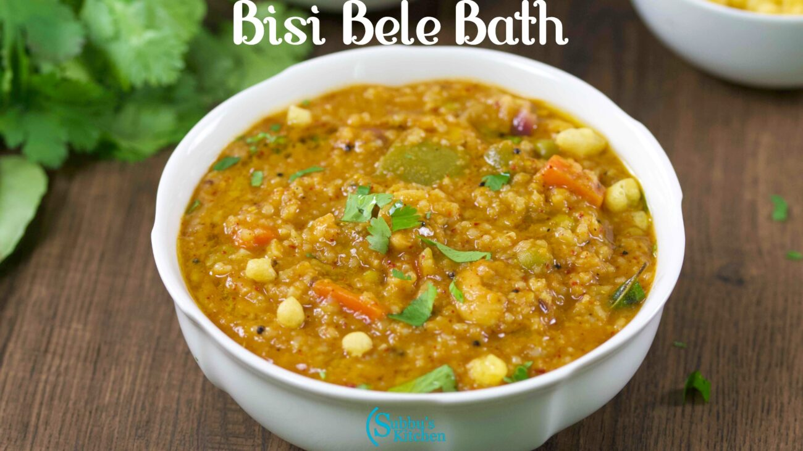

Bisi Bele Bath, a traditional South Indian dish, holds a special place in the culinary heritage of Karnataka, a state in southern India. The name "Bisi Bele Bath" translates to "hot lentil rice" in Kannada, reflecting its essence as a flavorful, one-pot meal that combines rice, lentils, vegetables, and a unique spice blend known as the "Bisi Bele Bath masala." The origins of Bisi Bele Bath can be traced back to Karnataka, where it emerged as a popular dish in the region's cuisine. It is believed to have originated in the kitchen of Mysuru Palace, where the royal chefs experimented with various ingredients to create a delicious and satisfying dish. Over time, Bisi Bele Bath became a staple in Karnataka households and is now enjoyed across the country. What sets Bisi Bele Bath apart is its distinctive masala, a blend of spices like coriander seeds, fenugreek, cumin, cinnamon, and cloves. This masala imparts a rich, aromatic flavor to the dish, elevating it to a culinary delight. The preparation involves cooking rice and lentils together with a medley of vegetables like carrots, beans, and peas. Tamarind pulp adds a tangy twist, while jaggery brings a hint of sweetness, creating a harmonious balance of flavors. The dish is then garnished with ghee-fried cashews and a generous serving of ghee, enhancing its taste and giving it a luxurious texture. Bisi Bele Bath is often served with a side of cooling yogurt or raita, balancing the heat from the spices.
Bisi Bele Bath Recipe

Ingredients Required
1 cup sona masuri rice
¾ cup toor dal (spilt pigeon peas)
1 medium onion finely chopped
2.5 cups mixed vegetables (carrot, beans, peas, potato and bell pepper)
2 tablespoon tamarind extract (tamarind water extracted from soaking small lemon size tamarind)
6 cups water
3 tablespoons bisi bele bath powder
½ teaspoon turmeric powder (haldi) optional
1 teaspoon red chilli powder
2-3 tablespoon oil
1 teaspoon mustard seeds
½ teaspoon jeera seeds (cumin)
1 sprig curry leaves
a pinch asafetida(hing)
salt adjust to taste
2 tablespoons coriander leaves (cilantro)
Instructions

Firstly, chop all the vegetables and onion. Keep aside.
Then, soak tamarind in warm water. Extract pulp and keep aside.
Press SAUTE on Instant Pot. Add oil, and once it's hot, add mustard seeds, cumin, curry leaves, asafoetida let it splutter.
Add onions or shallots. Saute for 2-3 minutes until they turn soft and light brown - stir regularly.
Next, add mixed vegetables and cook for another 1-2 minutes.
Then add bisi bele bath powder, red chili powder, turmeric powder, tamarind extract, salt.
Keep stirring; else the mixture may get burnt.
Add rinsed toor dal (lentils), rice, jaggery, and water give a stir.
Close the lid on the pot and turn the pressure valve to the SEALING position.Set the pot to 'MANUAL/PRESSURE COOK' (High Pressure) and timer to 8 minutes.
Do a NATURAL PRESSURE RELEASE (NPR) (Wait until the silver button on the lid drops).
Remove lid away from you, garnish with Cilantro.
Mix well. I like my bisi bele bhath to be mushy and liquid consistency.
Turn on the SAUTE mode again, add ½ - 1 cup of water (depending on your preference). Boil for 2-3 minutes.
Bisibelebath is ready. Prepare additional tempering but it's completely optional.
 Bisi Bele Bath, a traditional South Indian dish, holds a special place in the culinary heritage of Karnataka, a state in southern India. The name "Bisi Bele Bath" translates to "hot lentil rice" in Kannada, reflecting its essence as a flavorful, one-pot meal that combines rice, lentils, vegetables, and a unique spice blend known as the "Bisi Bele Bath masala." The origins of Bisi Bele Bath can be traced back to Karnataka, where it emerged as a popular dish in the region's cuisine. It is believed to have originated in the kitchen of Mysuru Palace, where the royal chefs experimented with various ingredients to create a delicious and satisfying dish. Over time, Bisi Bele Bath became a staple in Karnataka households and is now enjoyed across the country. What sets Bisi Bele Bath apart is its distinctive masala, a blend of spices like coriander seeds, fenugreek, cumin, cinnamon, and cloves. This masala imparts a rich, aromatic flavor to the dish, elevating it to a culinary delight. The preparation involves cooking rice and lentils together with a medley of vegetables like carrots, beans, and peas. Tamarind pulp adds a tangy twist, while jaggery brings a hint of sweetness, creating a harmonious balance of flavors. The dish is then garnished with ghee-fried cashews and a generous serving of ghee, enhancing its taste and giving it a luxurious texture. Bisi Bele Bath is often served with a side of cooling yogurt or raita, balancing the heat from the spices.
Bisi Bele Bath, a traditional South Indian dish, holds a special place in the culinary heritage of Karnataka, a state in southern India. The name "Bisi Bele Bath" translates to "hot lentil rice" in Kannada, reflecting its essence as a flavorful, one-pot meal that combines rice, lentils, vegetables, and a unique spice blend known as the "Bisi Bele Bath masala." The origins of Bisi Bele Bath can be traced back to Karnataka, where it emerged as a popular dish in the region's cuisine. It is believed to have originated in the kitchen of Mysuru Palace, where the royal chefs experimented with various ingredients to create a delicious and satisfying dish. Over time, Bisi Bele Bath became a staple in Karnataka households and is now enjoyed across the country. What sets Bisi Bele Bath apart is its distinctive masala, a blend of spices like coriander seeds, fenugreek, cumin, cinnamon, and cloves. This masala imparts a rich, aromatic flavor to the dish, elevating it to a culinary delight. The preparation involves cooking rice and lentils together with a medley of vegetables like carrots, beans, and peas. Tamarind pulp adds a tangy twist, while jaggery brings a hint of sweetness, creating a harmonious balance of flavors. The dish is then garnished with ghee-fried cashews and a generous serving of ghee, enhancing its taste and giving it a luxurious texture. Bisi Bele Bath is often served with a side of cooling yogurt or raita, balancing the heat from the spices.